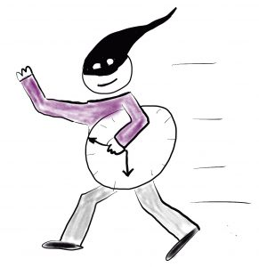

Meetingzeit reduzieren – Produktivität steigern

Meetings sind nach wie vor einer der größten Zeitdiebe in Unternehmen. Einen Arbeitstag pro Woche verbringt jeder Mitarbeiter durchschnittlich in Meetings. Das mittlere Management benötigt 40% und 50% seiner Arbeitszeit für Besprechungen. Und wer im Top Management tätig ist, investiert oft zwei Drittel des Arbeitstages oder sogar noch mehr Zeit in Meetings. Meetingzeit reduzieren ist dringend notwendig.Grundsätzlich wäre das nicht dramatisch, wenn Meetings immer auf dem schnellsten Weg auf den Punkt kämen und optimale Ergebnisse liefern würden. Aber genau das ist oft schwieriger als gedacht. In der Praxis fehlte es vielen Meetings an Effektivität und an Effizienz.
Was sind die größten Probleme in Meetings?
Die falschen Personen werden eingeladen
Wer kann den besten Input zum Thema des Meetings geben? Wer zu einem Meeting einlädt, fragt sich das natürlich. Aber mal ehrlich: Wie oft wird diese Frage wirklich konsequent verfolgt? Wie häufig werden nach wie vor zum Beispiel aus politischen Gründen Teilnehmer berücksichtigt, die inhaltlich kaum einen Beitrag leisten können? Daneben trauen sich auch Mitarbeiter häufig nicht, obwohl sie genau wissen, dass sie nichts beitragen können, abzusagen.
Das ist nicht nur für diejenigen, die eigentlich fehl am Platz sind, Zeitverschwendung. Wer so zu Meetings einlädt, kann dann weniger Personen berücksichtigen, die wirklich relevanten Input leisten könnten. Und das Risiko, dass die Diskussionen im Meeting am Thema vorbeilaufen, steigt deutlich. Und weil das Meeting nicht so viel bringt wie erwartet, muss noch eines angesetzt werden, was die Meetingzeit wieder erhöht.
Manchmal frage ich mich, warum Meetings nicht gänzlich freiwillig sind. Jeder muss doch wissen, an welchen Themen er/sie arbeitet und Interesse daran haben, diese voran zu bringen und wissen, welcher Input/Austausch benötigt wird. Umgekehrt sollte jemand der Input oder Feedback benötigt, für das angesetzte Meeting werben, den Eingeladenen wirklich verdeutlichen, warum deren Teilnahme wichtig ist.
Worum geht es überhaupt? Das Meeting-Thema wird nicht sauber abgesteckt.
Ziele. Hintergrund. Worum geht es überhaupt? Um den Rahmen eines Themas sauber abzustecken, ist nicht so viel mehr zu beachten. Dennoch versuchen sich viele Meeting-Organisatoren um die Festlegung des Meeting-Fokus herum zu mogeln.
Ein Abdriften auf Nebenkriegs-Schauplätze ist sehr wahrscheinlich, wenn der Zweck des Meetings nicht eindeutig geklärt wird. Es entstehen Missverständnisse oder die gemeinsame Arbeit am Meeting-Thema läuft sogar komplett in die falsche Richtung. Für die Produktivität in Meetings ist das Gift.
Fehlende Moderation – der Ablauf wird nicht konsequent genug organisiert
Meeting-Disziplin ist kein Selbstläufer. Sie muss eingefordert und begleitet werden. Vielen Meeting-Organisatoren fällt genau das schwer. Ob fehlender Mut, auch hierarchisch höhergestellte Personen zu lenken oder falsch verstandene Höflichkeit – für inkonsequente Moderation gibt es eine Reihe von Gründen.
Ein halbherzig oder nicht moderiertes Meeting führt zwangsweise zu Zeitvergeudung. Einige wenige Wortführer bestimmen die Diskussion während andere nicht zu Wort kommen. Die Wahrscheinlichkeit, dass sich das Meeting auf das Wesentliche konzentriert, sinkt massiv. Und infolgedessen leiden auch noch die Ergebnisse.
Gewinnbringende Meetings – eine harte Nuss. Und wie lässt sie sich knacken?
Das Meeting-Thema mit Fragen abstecken
Die meisten Aufgaben und Herausforderungen, die sich uns stellen, lassen sich als Fragen formulieren. Wenn Sie die Fragen zum Thema eines Meetings eindeutig stellen, steigert das die Klarheit, mit der die Teilnehmer die anstehende Aufgabe erfassen können. Missverständnisse werden vermieden und das Thema ist sauber eingegrenzt.
Zudem lösen Fragen einen psychologischen Sog aus. Auf die Meeting-Teilnehmer wirken sie wie unvollendete Aufgaben. Diese wollen, dank des Zeigarnik-Effektes, vollendet werden. Fragen fördern also engagierten und kreativen Input. So werden Meetings mit Fragen effektiver und effizienter.
Mit Brainstormings arbeiten
Brainstormings sind den in Meetings verbreiteteren aber weniger strukturierten offenen Diskussionen häufig überlegen. Im Prinzip sind viele Meetings ohne Brainstormings sogar Zeitverschwendung Warum das so ist, wird klar, wenn wir einen Blick auf den typischen Ablauf eines Brainstormings werfen.
Zu Beginn formuliert der Einladende das Thema des Brainstormings (am besten mit Fragen). Dann sammeln die Teilnehmer für eine begrenzte Zeit Antworten auf die Fragen. Die Erfahrung zeigt, dass so in kurzer Zeit viele gute Ansätze zu einem Thema zusammenkommen. Und viel seltener als in offenen Diskussionen vergessen Teilnehmer wichtige Aspekte zum Thema, um das es geht.
Wenn Sie dann noch einen Weg finden (z.B. Punkte kleben), die Beiträge zu bewerten und zu priorisieren, erhalten Sie schnell und sauber dokumentiert die Lösungsansätze zu Ihrem Meeting-Thema.
Und last but not Least: Vorbereitung ist alles
Meeting Vorbereitung ist unbeliebt aber wichtig. Dabei ist nicht so viel nötig, um ein gutes Meeting vorzubereiten.
Sie sind der Einladende:
- Machen Sie den Sinn und Zweck des Meetings deutlich und vermitteln Sie den Teilnehmern, warum ihr Input gefragt ist
- Formulieren Sie ein klares Ziel für das Meeting
- Stellen Sie sicher, dass Agenda und Protokolle o.ä. an zentraler digitaler Stelle liegen und von allen eingesehen werden können
- Laden Sie die richtigen Leute ein
- Laden Sie auch gern mal Personen ein, die einen Blick über den Tellerrand ermöglichen (Achtung, in diesem Fall gilt es besonderes Augenmerk auf die Einhaltung des Zeitplans zu legen)
- Stellen Sie klar, wofür die Vorbereitung auf das Meeting im Termin konkret benötigt wird und räumen Sie den Teilnehmern ausreichend Zeit für die Vorbereitung ein.
Sie sind der Eingeladene:
- selbstverständlich die Agenda und das Ziel des Meetings kennen
- die Ergebnisse des letzten Meetings vorher noch einmal studiert haben
- den eigenen Beitrag zum Meeting vorher zusammengefasst und den Teilnehmern zur Verfügung gestellt haben
- und nicht zuletzt: nicht nur die reine Meetingzeit sondern auch Vor- und Nachbereitungszeit in ihrem Kalender eingeplant haben
Aber selbst wenn Sie das alles berücksichtigen, gibt es noch Teile eines Meetings, die sehr zeitaufwendig sein können. Das ist zum Beispiel der Fall, wenn man sich in Meetings überhaupt erst mal auf anstehende Themen oder Fragestellungen einigen möchte/muss oder auch das o.g. Brainstorming.
Richtig effektiv und effizient können Meetings dann werden, wenn es gelingt, diese besonders zeitaufreibenden Teile auch in die Vorbereitung zu legen. Etwa noch ein extra-Meeting für’s Brainstormen?! Mitnichten. Digitales Brainstormen im Vorfeld ist die Lösung. Natürlich nicht per Mail oder Chat. Diese oft unendlichen Chats oder E-Mail Threads lassen sich kaum vernünftig zusammenfassen und darstellen. Es geht viel professioneller und zeitsparender, die tatsächliche Meetingzeit zu reduzieren.
Kürzlich habe ich ein Tool entdeckt, dass nicht nur die Meeting-Vorbereitung deutlich erleichtert sondern sogar dabei hilft Teile eines Meetings ganz entspannt in die Vorbereitung zu legen. Meebility habe ich jetzt schon mal für einen Arbeitskreis ausprobiert und bin ganz begeistert. Klar, wie bei jedem neuen Tool muss man sich erst einfuchsen, aber für meinen Geschmack macht es einem die App da sehr einfach und Meetingzeit reduzieren wird damit leicht.
Seien Sie gespannt, im nächsten Artikel wird Matthias Schmitz von meebility die Brainstorming -App hier vorstellen.
Weitere Artikel

KI als Copilot für die Assistenz
KI in Form von ChatGPT & Co sind hervorragende neue Werkzeuge im Office-Alltag, um produktiver und ja, auch kreativer, zu werden. Neugier statt Angst ist angezeigt im Umgang mit diesen Werkzeugen, die wie andere Werkzeuge auch …

Veränderung braucht Gewohnheit
Sowohl im Berufs-als auch im Privatleben sind wir ständig im Veränderungsmodus. Manche Veränderungen wollen wir umsetzen, manche müssen wir mitmachen. Wir alles wissen, dass Veränderung nie leicht sind und je länger wir etwas auf …